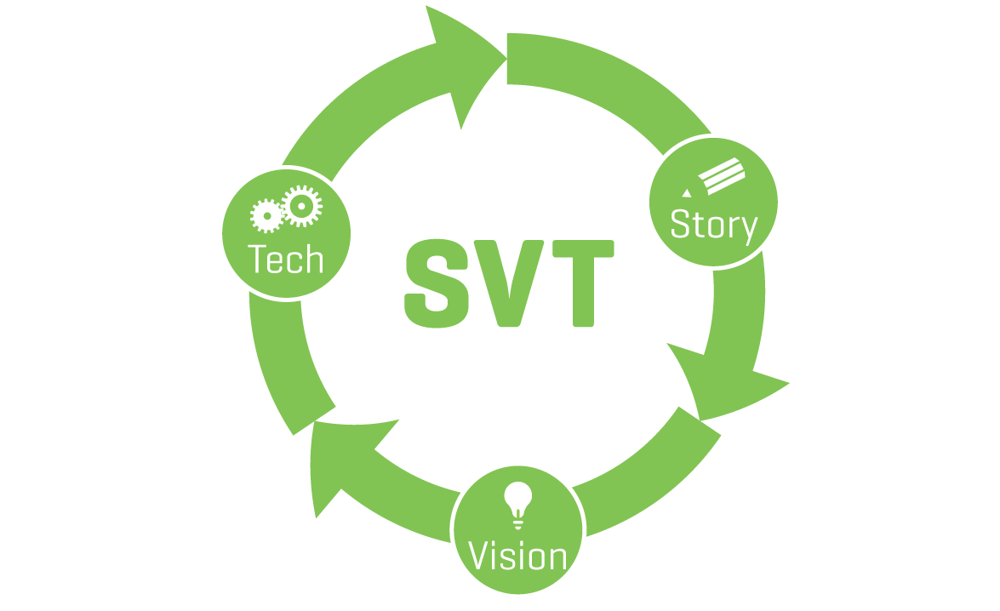

-
Introduction

-
History of Media

-
Remix

-
Ways of the Web

-
Web Native Storytelling

-
Web Native Planning

Week Three: Remixing
Assignments
1: Watch the “Chapter 3: Remix” curriculum video and explore the pop up resources in the video
2: Individual Blogpost
Tool: Your personal website, Tumblr, Wordpress, Blogger, etc.
Write a blog post on the week three guest speaker.
3: Create a Gender Remix
Tool: the Gender Remixer
Play around with the Gender Remixer for a few minutes. Think about what happens to the context of the commercial when the video and audio don’t match.
4: Jack the News
Tool: Newsjack
Play around with NewsJack for a few minutes. Think about how you detect biased information on the internet and save your hack URL!
5: Remix a Youtube Video using the Pop Up Template
Tools: Popcorn
Designing for the Web
Designing for your AUDIENCE:
You need to know who your target audience is. A target audience is a group of people that have something in common, and it greatly influences many design aspects.
Think about the type of people you want to engage. Make notes about things like age, family status, computer experience and interests or hobbies.
Ask yourself:
- How old are these people?
- Do they have a lot of family obligations?
- Do they have a particular career path?
- How often are they online?
- What are their hobbies?
Write a general description of your user.
The target audience is important because it helps to answer a bunch of design questions you’re going to have.
- Age range: Could impact color scheme, text size, and language used.
- Level of computer experience: Impacts viewer’s ability to interact with the site. What are they used to in terms of site design?
- Hobbies/Interests/Pastimes: May help to gear and guide the taste of the site as well as point views to other resources within these interests that they enjoy.
Content
Write all the content bits and pieces out on little pieces of paper. Then, categorize the pieces. This exercise will give you a logical global navigation (and subnavigation if you have lots of content).
There’s no one way to organize content. You need to have a feel for what your content is, and then categorize pieces together. Don’t forget, it’s easier to rearrange pieces of paper than electronic data.
This process doesn’t just help the organization of content, it also helps you begin to think about production resources you will need and a time plan.
Navigation
If you’ve worked through the content section, you’ll know that Navigation relies quite heavily on the content. Organizing content will reveal logical global and sub navigation. What comes first? Create a hierarchy for your content.
The site map shows exactly how many navigational items you’ll need as well as the hierarchy of the pages. The creation of a site map will also help you eliminate irrelevant content and know what you need to produce. It’s a good idea to take your time with this because without it, it will quickly become confusing where a particular piece of content “lives”. A simple and clear navigation structure is important so that your users don’t get confused or frustrated.
Planning a Web Native Film: SVT
 To help plan a web native film, we recommend a model called “SVT” (or Story, Vision, Tech). This cyclical model begins with the story. Technology can serve as inspiration, but never substitute for a story. Your number one job is to tell a story. Never forget it!
Story
What is your story about? Who are your characters? What are their motivations? Why should your viewers care? In web-native stories and traditional stories alike, story matters!
Vision
After you have the story, think about how you’d want your user to experience that story. How do you envision a viewer interacting with your web native film? What are the unique characteristics of the web (like participation, or interactivity) that can help you tell your story more effectively? You’ll need to bring a creative vision that serves as the expression of your story.
Information Architecture & Procedural Storytelling
Here are two concepts that apply specially to web-native stories: information architecture and procedural storytelling.
Information architecture refers to the way your app is structured. If you were making a traditional film, you’d need a basic information architecture to keep track of your notes, research, and footage. But the finished film requires no such architecture, since it’s a flat 90 minute film.
A web-native film is in a piece of software so it needs an information architecture. Information architecture is simply a system of organization that takes into account both how you present information and how a user accesses that information.
If, for example, your film brings images into the page: you need to have a mental model of what those images might be, where they are stored, and how they’re retrieved.
Procedural storytelling refers to a way of designing stories so they’re different every time. Procedural storytellers write the rules once and trust a computer to actually execute the story. Modern videogames are procedural stories, in that they respond to player actions. Madlibs are a kind of procedural story, in that a Madlib will be different each time it is completed by a new person.
It may help to sketch out storyboards, wireframes, or stage directions for how you want people to experience your story. Try to describe how it should work, not how you’d build it.
You shouldn’t worry too much about technology at this stage—your creative vision will determine the technical requirements. Just think big and figure out how to build it in the next step.
Tech
Once you have a story and vision, you’ll be able to investigate what kind of technology you need to make your vision come alive. The advantage of developing a vision first is that you’ll know exactly what technical challenges you’ll need to solve to make your vision work.
Everyone’s technology needs will be different. You’ll need to do some investigation around possible solutions— perhaps by searching the web, or consulting with a developer, or emailing the creator of a similar project for advice.
If you can at all avoid it, don’t waste your time writing code. The beauty of open source is that often, someone has already solved your problem. It’s much smarter to spend time repurposing and mashing together code, rather than starting from scratch.
Don’t include technical components just because they’re shiny and cool: the tech needs to serve the project’s goals.
Rinse and Repeat!
After you’ve cycled through story, then vision, then tech—you’ll want to come back to story.
Maybe your idea of the story has changed along the way. Or maybe you think that the technology isn’t there to support your vision, and need to revisit whether this is the best story to develop for the web. Be brave and not afraid to iterate on your work — it’s part of what makes an excellent storyteller.
Show your work
There are some differences between web-native storytellers and conventional storytellers. Many storytellers are afraid of showing things that are half done. Filmmakers, for instance, do a lot of iteration on their projects, but it usually happens in private—they continue to tighten their edit to test the flow, tempo, and rhythm of a certain cut. But to adapt to the web, filmmakers have to be willing to do this kind of iteration in public.
As a web-native storyteller, you’re necessarily making software. And in the software world, we like to say “if you’re not embarrassed when you ship your first version, you waited too long.”
The best way to tackle a web-native project is to release early, release often and iterate on your ideas constantly. Using a cyclical model might mean your project may never be finished, but you can be sure it will be awesome. Like Da Vinci said, “Art is never finished, it’s only abandoned.”
In summary
Start with a story—an actual story about actual people and their motivations. Then have a vision for how you can tell that story more effectively using the web. Then, and only then, figure out the specific technologies you will use to implement this vision. This way, you’ll be in a position to make technology work for you—and not be stuck asking “what can I do with technology?”